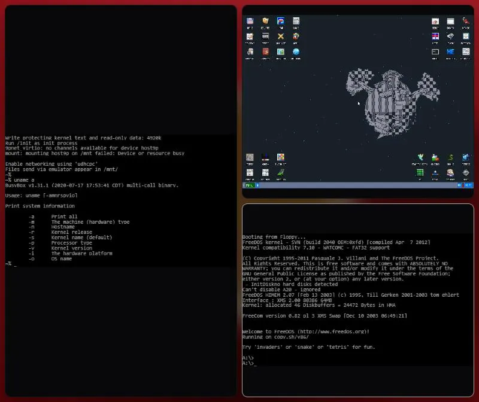

operating system · planning
XKernel
Your whole machine, as a multi-VM.
Every operating system you use runs side by side as a tile over your wallpaper, on real hardware through Linux's KVM. No bar, no dock, no assistant. Your machines save themselves and resume where you left them. The browser showcase already boots real OSes in tiles.
